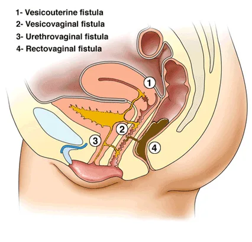
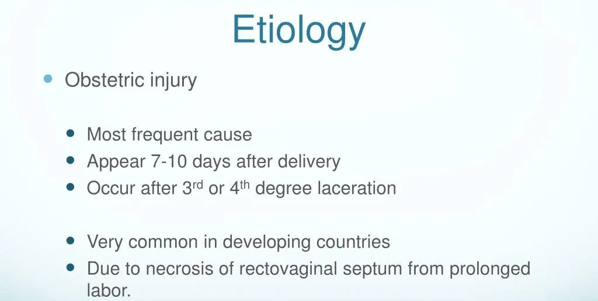
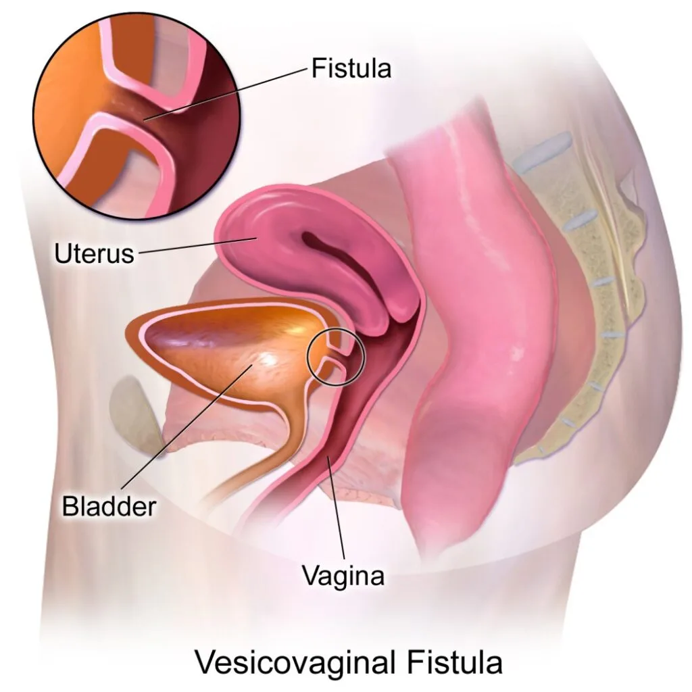
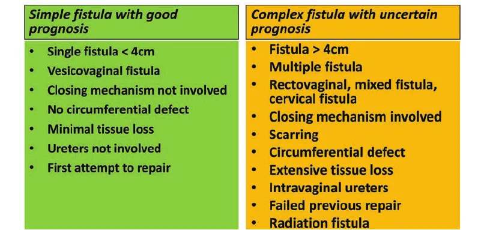
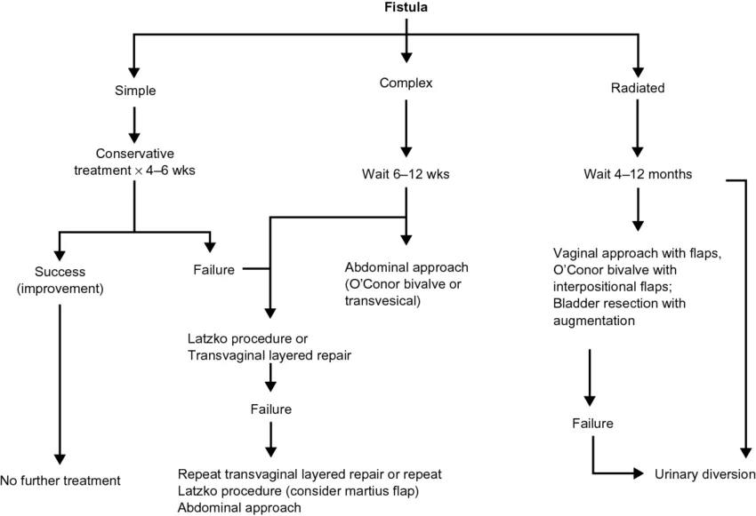
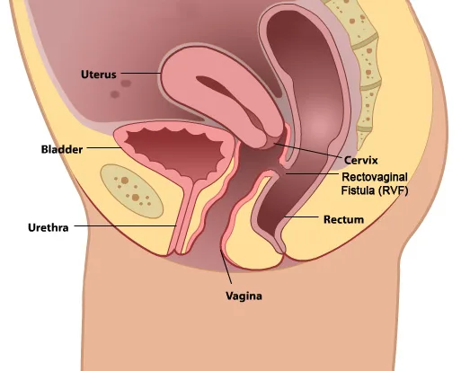

Expanded Nursing Uganda Explanation
Vesico-Vaginal Fistula(VVF) should be reviewed through safe maternal and newborn assessment, early recognition of danger signs, respectful communication and timely referral. Connect the definition to vital signs, bleeding, fetal or newborn wellbeing, patient education and local protocol requirements.
Contents — 23 sections (tap to expand)
01 OBSTETRIC/VAGINAL FISTULA
Vaginal Fistula is an abnormal communication (opening) of the vagina and the neighbouring -pelvic organs as a result of obstetrical causes e.g. delivery.
Urogenital Fistula: Abnormal communication between the urinary (ureters, bladder, urethra) and genital (uterus, cervix, vagina) systems.
A fistula is an abnormal communication between two or more epithelial surfaces.
02 Types of vaginal/obstetric fistula
Vaginal Fistula : A general term for a fistula formed within the vaginal wall.
- Vesicovaginal Fistula (VVF) : When a vaginal fistula extends into the urinary tract, it is specifically referred to as vesicovaginal fistula. The most common type of urogenital fistula , occurring between the bladder and vagina.
- Rectovaginal Fistula (RVF) : If the vaginal fistula opens into the rectum, it is termed a rectovaginal fistula.
- Colovaginal Fistula : An occurrence where a vaginal fistula communicates with the colon.
- Enterovaginal Fistula : When the opening of a vaginal fistula connects with the small bowel.
03 Anatomical Communications
- Organ Ureter Bladder Urethra
- Vagina Ureterovaginal Vesicovaginal Urethrovaginal
- Cervix Ureterocervical Vesicocervical Urethrocervical
- Uterus Ureterouterine Vesicouterine Not reported
04 General Causes of Urogenital Fistula
- Prolonged, Obstructed Labor: Prolonged pressure of the foetal head against the pelvic tissues during obstructed labour can cause ischemia and necrosis of the vaginal wall and bladder. This necrosis can create a fistula, typically between the bladder and vagina (vesicovaginal fistula).
- Caesarean Section (Especially Repeat Cesareans) : Surgical incisions through the bladder or close to the bladder during caesarean sections can cause direct injury or lead to ischemia. This can result in a vesicovaginal fistula if the bladder is inadvertently cut or damaged.
- Bladder is Cut: Accidental incision into the bladder while performing the surgery.
- Bladder Wall Sutured: Suturing the bladder wall during closure of the uterus can cause damage.
- Adherent Bladder : In women with previous caesarean scars, the bladder may adhere to the uterine scar and tear during separation.
- Caesarean Hysterectomy: This procedure involves the removal of the uterus following a caesarean delivery. The close proximity of the bladder to the uterus increases the risk of bladder injury. Damage to the bladder during this surgery can create a vesicovaginal fistula.
- Operative Vaginal Delivery : Use of forceps or vacuum during delivery can cause trauma to the vaginal and bladder tissues. This trauma can lead to tissue necrosis and the development of a fistula.
- Ruptured Uterus : Uterine rupture can involve the bladder, especially in patients with previous scars where the bladder is adherent.
- Bladder Cut or Sutured: During repair of the uterus or hysterectomy, the bladder may be inadvertently cut or sutured.
- Symphysiotomy : During the procedure to widen the pelvis, the bladder and urethra, if not properly displaced, can be damaged. This damage can lead to a vesicovaginal or urethrovaginal fistula.
- Cervical Cerclage : Placement of a stitch around the cervix to prevent premature birth can sometimes cause damage to surrounding tissues if not properly placed. This damage can lead to a fistula between the cervix and bladder.
- Hysterectomy : Removal of the uterus can sometimes damage the bladder or ureters due to their proximity. This can result in vesicovaginal or ureterovaginal fistulas.
- Myomectomy : Removal of fibroids from the uterus can inadvertently damage the bladder or ureters. This can lead to vesicovaginal or ureterovaginal fistulas.
- Loop Excision of Cervix : Treatment for cervical dysplasia involves removing abnormal cervical tissue, which can sometimes damage nearby structures. This can create a fistula if the bladder is unintentionally injured.
- Voluntary Interruption of Pregnancy : Procedures to terminate pregnancy can sometimes cause trauma to the bladder or ureters. This trauma can result in fistula formation.
- Anterior Colporrhaphy : Surgery to repair a cystocele (bladder prolapse) can sometimes damage the bladder. This can lead to a vesicovaginal fistula.
- Periurethral Bulking : Injection of materials around the urethra to treat incontinence can sometimes cause trauma. This can result in a urethrovaginal fistula.
- Urethral Diverticulum Repair : Surgery to remove a diverticulum from the urethra can cause damage to surrounding tissues. This can result in a urethrovaginal fistula.
- Ureteral Wall Stent: Placement of stents in the ureters can sometimes cause trauma to the ureters or bladder.This trauma can result in a ureterovaginal or vesicovaginal fistula.
- Insertion of Shirodkar Stitch : Placement of a cervical stitch to prevent preterm birth can damage the bladder if not done carefully. This can create a vesicocervical fistula
- Dilatation and Curettage (D&C) : The procedure, especially during pregnancy termination, can cause trauma to the bladder or urethra. This trauma can result in the formation of fistulas.
- Manchester Operation : Surgery for uterine prolapse can cause damage to the bladder or urethra. This can result in a vesicovaginal or urethrovaginal fistula.
- Endometriosis : Abnormal growth of endometrial tissue can invade the bladder or ureters. This invasion can create fistulas due to chronic inflammation and tissue damage.
- Gynecologic Cancers : Tumours from cancers like cervical, uterine, or ovarian cancer can invade the bladder or ureters. Surgical removal or the tumour itself can cause fistula formation.
- Cervical Cancer (Stage 4 ): Advanced cancer can invade the bladder tissues. This invasion can create a vesicocervical fistula
- Pelvic Irradiation : Radiation therapy for pelvic cancers can cause tissue necrosis in the bladder and surrounding areas. This necrosis can lead to vesicovaginal fistulas.
- Infections (Tuberculosis, Lymphogranuloma Venereum): These infections can cause chronic inflammation and tissue damage in the urinary and genital tracts. This damage can lead to the formation of fistulas.
- Intrauterine Device (IUD) : IUDs can sometimes perforate the uterus and migrate, causing damage to the bladder. This can lead to a vesicovaginal fistula.
- Retention of Vaginal Foreign Object : Forgotten or unrecognized foreign objects such as tampon, diaphragm, cervical cap, pessary in the vagina can cause chronic inflammation and tissue damage. This can result in fistula formation.
- Accidental Trauma: Blunt or penetrating trauma to the pelvic region can cause direct injury to the bladder or urethra. This injury can lead to the formation of a fistula.
- Sexual Trauma : Violent or forced sexual activity can cause severe trauma to the vaginal and bladder tissues. This trauma can result in vesicovaginal fistulas.
- Mitomycin C Instillation : Chemotherapy agent used for bladder cancer can cause severe bladder irritation and necrosis. This necrosis can lead to fistula formation.
- Bladder Stone: Large bladder stones can cause chronic irritation and erosion into the bladder wall. This erosion can create a vesicovaginal fistula.
05 Risk Factors of Fistula
- Poverty : Limited access to healthcare can lead to poor management of obstetric and gynecological conditions, increasing the risk of fistulas.
- Malnutrition : Poor nutritional status can weaken tissues, making them more susceptible to damage during childbirth or surgery.
- Lack of Education : Deficient knowledge about prenatal care and safe childbirth practices increases the risk of complications leading to fistulas.
- Early Childbirth : Young mothers often have smaller pelvic dimensions, increasing the risk of obstructed labour and subsequent fistula formation.
- Lack of Healthcare : Inadequate access to skilled medical care during childbirth can result in prolonged obstructed labour or mismanaged surgical procedures.
- High Parity : Multiple pregnancies can increase the risk of uterine and bladder prolapse, leading to a higher risk of fistula formation during childbirth or surgical procedures.
- Prolonged Labour without Medical Assistance : Lack of timely medical intervention can lead to obstructed labor, increasing the risk of ischemic injury to the bladder and adjacent tissues.
- Inadequate Prenatal Care : Poor prenatal care can result in undiagnosed or poorly managed conditions like fetal macrosomia or malpresentation, which can complicate delivery and increase fistula risk.
- Pre Existing Medical Conditions: Conditions such as diabetes or hypertension can impair wound healing and tissue resilience, increasing susceptibility to fistulas.
- Previous Pelvic Surgeries : Scar tissue from prior surgeries can complicate new procedures and increase the risk of bladder or urethral injury.
- Use of Harmful Traditional Practices: P ractices like female genital mutilation or the Gishiri cut can cause direct injury to the urinary and genital tracts, leading to fistula formation.
06 Symptoms of Urogenital Fistula
- Continuous Urinary Leakage : Persistent and unexplained leakage of urine from the vagina following recent surgery, a difficult vaginal delivery, or local trauma. The continuous passage of urine through the vaginal opening is due to an abnormal connection (fistula) between the bladder or urethra and the vagina.
- Recurrent Cystitis or Pyelonephritis : Frequent bladder infections or kidney infections. The abnormal passage allows urine to stagnate and become infected, leading to recurrent urinary tract infections.
- Unexplained Fever: Persistent fever without an obvious cause. Chronic infections related to the fistula can cause systemic symptoms such as fever.
- Hematuria : Presence of blood in the urine. Trauma or infection around the fistula site can lead to bleeding into the urinary tract.
- Flank, Vaginal, or Suprapubic Pain: Pain in the sides (flank), vagina, or above the pubic bone (suprapubic). Inflammation, infection, and ongoing leakage of urine can cause significant pain in these areas.
- Abnormal Urinary Stream : Changes in the usual pattern of urination. The fistula can disrupt the normal flow of urine, leading to an abnormal urinary stream.
- Vaginal, Vulvar, and Perineal Irritation: Irritation or discomfort in the vaginal, vulvar, and perineal areas. Constant exposure to urine can irritate these tissues, leading to inflammation and discomfort.
- Foul Ammoniacal Odour: A strong, unpleasant smell resembling ammonia. Bacterial activity in the urine leads to the production of ammonia, causing a foul odour.
- Severe Perineal Dermatitis : Severe skin irritation and inflammation in the perineal area. Continuous contact with urine can lead to dermatitis, characterized by redness, swelling, and irritation of the skin.
- Greenish-Gray Phosphate Crystals in the Vagina and Vulva: Presence of greenish-gray deposits on vaginal and vulvar surfaces.Bacterial action on urea in urine leads to an alkaline environment, causing phosphate crystals to precipitate and deposit in the affected areas.
- Social Isolation, Disrupted Sexual Relations, Depression, Low Self-Esteem, Insomnia : Emotional and psychological distress due to the condition. The constant leakage of urine and associated symptoms can lead to significant social and emotional impacts, including isolation, difficulties in sexual relationships, depression, low self-esteem, and sleep disturbances.
07 Diagnostic Signs and Examination Findings
Patient History
- History of Prolonged and Obstructed Labor : Key indicator of potential fistula development.
- Mother Reports Leakage of Urine : Continuous leakage without control is a classic sign of fistula.
Physical Examination
- No Palpable Bladder on Abdominal Palpation: Indicates that urine does not accumulate in the bladder but leaks out.
- Urine Smell : The patient often has a characteristic smell of urine.
- Signs of UTI and Low-Grade Fever: Recurrent infections due to urine leakage.
- Vulva Inspection: Visible dribbling of urine from the vagina.
- Speculum Examination: Visible defect with urine escaping through it.
Diagnostic Tests
- Methylene Blue or Gentian Violet Test : Injection of methylene blue or gentian violet dye into the bladder via a catheter. The presence of dye leaking into the vagina confirms the fistula.
- Soft Tissue X-ray and Cystography: Show defects and injuries in the bladder.
- Creatinine Content in Vaginal Fluid: High levels indicate urine leakage.
- Cystoscopy : This endoscopic examination allows direct visualization of the bladder and urethra, helping to locate the exact anatomical origin of the fistula.
- Soft Tissue X-ray : Helps to visualize the defect and confirm the presence of a fistula.
- Speculum Examination: Direct visual inspection using a speculum to identify and assess the fistula.
- Digital Examination : Manual examination to feel the fistula and surrounding tissues.
- Subtraction Magnetic Resonance Fistulography: A specialized imaging technique that can provide detailed visualization of the fistula.
- Endocavitary Ultrasound : Transrectal or transvaginal ultrasound, potentially with Doppler or contrast agents, to visualize the fistula. Transvaginal sonography can clearly show the exact site, size, and course of the fistula.
- Biopsy : If malignancy is suspected, a biopsy of the affected tissue is taken for histologic examination to rule out cancer.
08 VESICO-VAGINAL FISTULA
Vesicovaginal fistula or VVF is an abnormal fistulous tract extending between the bladder (vesico) and the vagina that allows the continuous involuntary discharge of urine into the vaginal vault.
OR: It is the abnormal opening of the vagina and the urinary bladder.
Pathology of a urinary fistula
- If the cause is a tear, urine escapes at once but the wound may not become infected immediately and primary union can occur in one week or two provided the urinary stream is diverted.
- If the cause is pressure necrosis, the affected area will form a slough which eventually drops out leaving a fistula.
- If the fistula is large (over 2 cm diameter) spontaneous healing is unlikely and scar tissue gradually forms a dense white ring round the edge of the fistula even fixing it to the pubic ramus.
- Urinary fistula has a natural tendency to close by granulation, fibrosis, and contraction.
09 Types of VVF
- Simple fistula : Only about 20% of obstetric fistulas can be defined as simple. Simple fistulas are less than 3 cm in diameter with no or only mild scarring and do not involve the urethra.
- Complex fistula : A complex obstetric fistula can be described as being larger than 3 cm, involving the urethra and associated with reduced vaginal capacity from significant scarring and/or a reduced bladder volume. Sometimes the defect may be urethrovaginal, but more commonly both the urethra and bladder are involved and therefore the fistula is called a urethro-vesicovaginal.
10 Management of vesico – vaginal fistula
If the woman is very ill and the fistula is small and does not involve the urethra: she can be managed conservatively while treating the cause of the illness.
- Small fistula : Small vesico-vaginal fistulas can often be repaired with a high chance of success. A catheter is passed into the bladder and left in place for several days to keep the bladder empty while the tissues heal.
- For larger fistulas: If the tissues are badly damaged or if the fistula involves the urethra or if the tissues are very scarred and inflexible, delayed repair or reconstructive surgery may be needed.
- With the conservative treatment of the large fistulae, a catheter is passed into the bladder through the urethra and left in place for several days to keep the bladder empty while the tissues heal.
- Any indwelling catheter should be left in place for 2 to 3 weeks following the repair.
- Insertion of the catheter: A catheter is inserted through the urethra to continuously drain urine from the bladder.
- If urine is not draining, the catheter may be blocked. If the bladder is not emptying because the bladder muscle is not contracting, the catheter may be blocked or the catheter may have been inserted through the side of the urethra. If the catheter is in the vagina and not in the bladder, urine will not be draining from the catheter.
In the Health Center
- Mother is encouraged on personal hygiene and referred to the hospital.
In Hospital
- Mother is admitted to a gynaecological ward.
- Doctor is informed and will carry out a gynaecological examination: Genital examination with fingers, no instruments used for fear of enlarging the opening.
- May carry out a speculum examination.
- A self-retaining catheter is passed and the mother is kept on continuous bladder drainage as dripping of urine prevents healing.
- Give a balanced diet including iron, vitamin supplements, and if necessary, blood transfusion to restore her general health.
- Most fistulas will close spontaneously within 6 weeks as long as there is continuous bladder drainage, good health, and control of infections.
- Use of antiseptic vaginal douches to clear any smell.
- At the end of puerperium, a patient is assessed by means of speculum examination.
- Previously, enough time was to be given to allow the tissue to heal and strengthen sufficiently.
- Thereafter, a mother would be asked to go home and return for surgery after 3 months. Today, it can be repaired as soon as it is diagnosed.
- During the resting and waiting time for the surgery, the following are necessary:
- Reassurance
- Plenty of rest
- Good diet with high protein and vitamins for quick healing
- Hygiene/vulva toilet
- Wearing pads at all times and frequently changing them.
- Use of a barrier cream to prevent excoriation of the skin, e.g., Zinc and Castor oil
- Mother is put on continuous bladder drainage.
Actual Treatment
- Repair the fistulae as soon as the patient is first seen.
- Perform the necessary examination under anaesthesia to establish where urine is coming from and the appropriate position for repair.
- This can be done together with the injection of dye through a catheter into the urinary bladder to observe where the opening is, as the dye will be seen coming out of it.
- Then the fistulae can be repaired surgically.
Care After Repair
- Care is similar to that for any mother after an operation or obstructed labour.
- Mother is nursed in a supine position to prevent excessive pressure on the suture site.
- Continuous bladder drainage to rest the bladder and allow proper healing.
- Plenty of fluids to flush the bladder and prevent pressure on the wound. Any blood clot or debris is washed out, preventing urine stasis and urinary tract infections.
- Maintain a fluid balance chart.
- Observe the amount of urine passed and its colour, especially for blood clots which may block the catheter.
- Bed is observed daily for wetness.
- Remove the catheter after 2 weeks if the bed is dry. If the catheter remains in place, it might prevent a small area from healing or closing yet, and with time it might close.
- Continuous bladder drainage to prevent the bladder from over-distending, ensuring proper healing. The catheter is kept in place for at least 2 weeks or until there is no more leakage of urine.
- If urine continuously leaks onto the bed and very little or no urine is draining into the bag, chances are that the bladder repair has almost completely broken down, necessitating a repeat repair.
- Inspect the bed to ensure it is dry.
- Ensure there are no blood clots or debris blocking the catheter, ensuring free drainage of urine.
- Plenty of fluids to prevent the formation of debris that could block the catheter.
- Bladder training to release urine at increasing intervals to allow the bladder to regain its capacity and muscles to regain their tone.
- If after 2 weeks all urine is draining into the catheter and the bed is dry, continue bladder training for 5 days.
Post-Operative Catheter Care
- Catheter must drain freely at all times; if it becomes blocked, the operation may fail.
- Catheter strapped to the mother’s thighs.
- Patients must not lie on the catheter.
- Catheter or tubing must not be twisted.
- Drainage tubing must go into a basin or bucket at the side of the bed. Urine must be draining at all times.
- Patient must drink fluids freely as soon as she has recovered from the anaesthetic.
- Urine should be very pale, almost like water; if not, the patient should drink more.
- If the catheter stops draining or the patient complains of a full bladder, the catheter must be removed immediately.
- It must be irrigated to unblock it.
- If irrigation fails, the catheter must be changed, usually by the doctor.
- Apply Vaseline around the thighs.
Advice on Discharge
- No coitus for at least 3-6 months.
- Rest and take prescribed drugs.
- Maintain vulva hygiene.
- Come back for review.
- Continue feeding well.
- Next mode of delivery should be ELECTIVE C/S.
- Recurrent fistula : If a fistula is closed and urine is allowed to accumulate in the bladder, the pressure may tear the repair and a new fistula may develop.
- Sepsis : If a woman develops fever or sepsis, she must be given antibiotics.
- Social problems: The social stigma attached to a woman with a VVF can be severe and prolonged. The constant wetness and odour of urine are offensive to the woman and those around her. She may be abandoned by her husband and family and may become an outcast.
- Permanent conditions : Despite surgery, the woman may still leak urine. This can be because the tissues are scarred and cannot stretch, because the urethra is damaged, or because the bladder cannot empty.
- If the woman has been leaking urine for months or years, the bladder may be too small or damaged to store the normal amount of urine.
- Fertility : damage to the cervix and the uterus and if there is an infection in the uterus, the woman may not be able to conceive and carry a pregnancy to term.
- Community health education.
- Emphasis on antenatal care.
- Training traditional birth attendants: they should learn how to recognize prolonged labour and refer the woman for emergency care.
- Timely referral of the woman: to a hospital for an emergency c/s if needed.
- Government support: it should be provided to improve facilities and personnel.
11 RECTO-VAGINAL FISTULA
Recto-vaginal fistula is the connection between a woman’s rectum and vagina. The opening allows stool and gas to leak from the bowel into the vagina.
12 Causes
- Complications during childbirth : During difficult delivery, the perineum can tear, or when performing an episiotomy to deliver the baby.
- Inflammatory bowel disease (IBD) : Conditions such as Crohn’s disease and ulcerative colitis cause inflammation in the digestive tract and can increase the risk of developing a fistula in rare cases.
- Cancer or radiation to the pelvis : Cancer in the vagina, cervix, rectum, uterus, or anus can cause a recto-vaginal fistula. Radiation to treat these cancers can also create a fistula.
- Surgery : Surgery on the vagina, rectum, perineum, or anus can cause an injury or infection that leads to an abnormal opening.
- Infections due to HIV.
- Sexual assault.
13 Signs and Symptoms
- Passing stool or gas from the vagina.
- Trouble controlling bowel movements.
- Smelly discharge from the vagina.
- Repeated vaginal infections.
- Pain in the vagina or the area between the vagina and anus (perineum).
- Dyspareunia (painful intercourse).
14 Risk Factors
- Mother with prolonged labor.
- Mother with obstructed labor.
- Episiotomy during labor.
- Women with infections such as an abscess or diverticulitis.
- Women having cancer of the vagina, cervix, rectum, uterus, or anus, or radiation to treat these cancers.
- Women who have undergone a hysterectomy or other surgeries to the pelvic area.
15 Diagnosis
- History taking : The doctor will ask about symptoms and perform a physical examination.
- Physical examination : With a gloved hand, the doctor will check the vagina, anus, and perineum. A speculum may be inserted into the vagina to open it up so the doctor can see the area more clearly. A proctoscope can help the doctor see into the anus and rectum.
- Tests :
- Anorectal or transvaginal ultrasound : A wand-like instrument is inserted into the anus and rectum, or into the vagina. An ultrasound uses sound waves to create a picture from inside the pelvis.
- Methylene enema : A tampon is inserted into the vagina, then a blue dye is injected into the rectum. After 15 to 20 minutes, if the tampon turns blue, one has a fistula.
- Barium enema : A contrast dye helps a doctor see the fistula on an X-ray.
- CT scan : Uses powerful X-rays to make detailed pictures inside the pelvis.
- MRI : Uses strong magnets and radio waves to make pictures from inside the pelvis. It can show a fistula or other problems with the organs, such as a tumor.
16 Management
Surgery : The main treatment for a fistula is surgery to close the abnormal opening. However, surgery can’t be performed if there is an infection or inflammation. The tissues around the fistula need to heal first.
- The doctor might decide to wait for three to six months for an infection to heal and to see if the fistula closes on its own. Antibiotics are given to treat an infection or infliximab (Remicade) to bring down inflammation if the patient has Crohn’s disease.
While waiting for surgery:
- Take antibiotics and analgesics.
- Keep the area clean. Wash the vagina gently with warm water if you pass stool or a foul-smelling discharge. Use only gentle, unscented soap. Pat the area dry.
- Use unscented wipes instead of toilet paper after visiting the bathroom.
- Apply talcum powder or a moisture-barrier cream to prevent irritation in the vagina and rectum.
- Wear loose, breathable clothing made from cotton or other natural fabrics.
- If leaking stool, wear disposable underwear or an adult diaper to keep the feces away from the skin.
Surgery options:
- Vaginal repair: Usually done when the fistula is in the lower half of the vagina or near the perineum.
- Abdominal repair: Used by a general surgeon when repairing a recto-vaginal fistula arising in the vault after hysterectomy or radiotherapy.
- During surgery, the doctor will take a piece of tissue from somewhere else in the body and make a flap or plug to close the opening.
- The surgeon will also fix the anal sphincter muscles if they are damaged.
- Some women will need a colostomy if a fistula is large and if continuing malignant tissue is suspected.
17 Complications
- Recto-vaginal fistula can affect sex life.
- Trouble controlling the passage of stool (faecal incontinence).
- Repeated urinary tract or vaginal infections.
- Inflammation of the vagina or perineum.
- Abscess in the fistula.
- Another fistula after the first one is treated.
18 Prevention
- Health education to women on regular ANC services.
- Early detection of associated risks and appropriate referral should be made.
- Proper monitoring of labour using the partograph.
- Skilled attendance at all births.
19 RELATED QUESTION
- Objectives Define obstetrical fistula. Define fistula. General causes of fistula. General signs and symptoms of fistula. Classifications of fistula. Define VVF and RVF. Investigations of VVF. Management of VVF and RVF. Prevention of VVF. Complications of VVF. Fistula Obstetrical fistula : An opening or passage between organs of the genital tract and the urinary tract. Fistula : An abnormal communication between two organs. Classifications of Fistula Vesico-vaginal fistula : Between bladder and vagina. Recto-vaginal fistula: Between rectum and vagina. Vesico-uterine fistula : Between bladder and uterus. Urethro-cervical fistula : Between urethra and cervix. Uretero-cervical fistula : Between ureter and cervix. General Causes of Fistula Obstetrical causes: Poorly performed episiotomy. Instrumental delivery (e.g., vacuum extractor and forceps delivery). Operations such as caesarean sections. Prolonged labor due to narrowing of pelvis. Obstructed labor due to compressions from fetal head and symphysis pubis. Gynecological causes: Injuries caused during operations (e.g., hysterectomy and myomectomy). Criminal abortion (e.g., use of sticks and other sharp objects). Traumatic causes: Direct trauma on the bladder or rectum due to road traffic accidents. Falls on sharp pointed objects. Radiation: Common during treatment of cancer of the genital organs by radiotherapy rays. Infections : Infections like tuberculosis (e.g., tuberculosis of vagina may infiltrate normal tissues or cells). Malignancy: Abnormal growth of tissues in the vagina, cervix, bladder, and vagina. General Signs and Symptoms of Fistula History taking: A mother may give a history of prolonged labor or obstructed labor leading to the rupture of the uterus. Passage of urine: Passage is kept open by chronic inflammations leading to continuous passage of urine in the vagina. No bladder is felt on abdominal palpation since all urine escapes as soon as it reaches the bladder. On vulva inspection: Urine is seen dribbling from the vagina. On speculum examination (e.g., Casco’s), the bladder mucosa may be seen prolapsed through fistula. Complete wetness of the underwear due to continuous dribbling of urine. Signs of urinary tract infections (e.g., syphilis, candida, and gonorrhea) may occur. Other signs and symptoms: Stool: Faeces will be seen in the vagina during recto-vaginal fistula. Pain: The mother will feel pain during fistula. Excretion of the vagina: Offensive smell which may be due to infections and itching of the vulva. Vesico-Vaginal Fistula Definition : An abnormal communication between the bladder and the vagina. Investigations of VVF Retrograde pyelography : Used to visualize the ureter. Intravenous urography: Used to visualize the abnormalities of ureter and bladder. Ultrasound scanning : Used to examine the interior of hollow organs. Cystography: In complex fistula where lateral view of uterine cavity may be seen. Management of VVF Surgery : Done after 3 months following delivery in case of old VVF. If fistula is recognized within 24 hours, it may be repaired immediately if it is small. Aims of management: To relieve pain. To relieve anxiety. To promote quick recovery. To prevent complications. Management in the health center: Receive the mother and relatives. Offer a seat for them. Take personal history. Take gynecological history and call for an ambulance if it is a surgical condition. Fill the referral form while reassuring the mother and accompanying her to the hospital, observing the vitals to rule out other bacterial infections. Hand over the mother to the nurse/midwife on duty and give a report about the mother. Hospital management: The nurse on duty receives the mother and takes vital observations to rule out other abnormalities. Admit the mother to the gynecological ward, have her sign a consent form, and call the doctor. The nurse takes a brief history and continues taking vitals as the doctor comes. The doctor carries out a genital examination and speculum examination. Self-retaining catheter is passed, and she is kept on continuous bladder drainage as dripping urine prevents wetting of the linen. The mother is put on appropriate antibiotics to treat any bacterial infection as prescribed by the doctor. Encourage the mother to eat nutritious foods which are light and can easily be digested. Most fistulas will close spontaneously within 6 weeks as long as there is continuous bladder drainage, good health, and control of infections. In case of swelling or vaginal discharge due to sloughing of necrotic tissue, antiseptic vaginal douches are given (e.g., vaginal douche syringe to suck the fluid). At the end of the puerperium, the patient is assessed by use of speculum. Allow enough time for tissue healing and strengthening before scheduling surgery after 3 months. Remove the catheter at 6 weeks if it is no longer needed; if urine continues to drip, prepare the mother for surgery. Reassure the mother before taking her to the theater for operation. Pre-Operative Management The mother should have plenty of rest and sleep. Encourage a nutritious diet with light, high-protein, and vitamin-rich foods to aid healing. Maintain hygiene with vulva toileting three times a day. Teach the patient about the condition, signs, and symptoms, and to wear a pad at all times, changing frequently to avoid infections. Reassure the mother to relieve anxiety. Administer drug therapy (antibiotics for bacterial infections and pain killers for pain relief). Take vital observations to rule out other abnormalities. Prepare the mother for operation by bathing, shaving, dressing in theater gown, and informing the theater nurse. Accompany the mother to the theater and hand her over to the theater nurse with the necessary forms and details. Prepare a post-operative bed for the patient’s return from the theater. Post-Operative Management The patient is received by qualified nurses from the theater with all necessary information. Vital observations are taken to confirm the mother’s condition. The mother is taken to the gynecological ward and placed on a post-operative bed. Position the mother in a comfortable position (e.g., prone position) to relieve pressure on the bladder. Special Nursing Care Record vital observations (TPR/BP) every 15 minutes, 1 hour, 2 hours, and 4 hours for the first 24 hours. Keep the mother on complete bladder drainage for 14 days. Maintain a fluid balance chart, ensuring the correct rate and amount of ordered fluids. Check the level, color, and care of the urine drainage bag and catheter. Administer antibiotics (e.g., Ampicillin 1g every 6 hours and Gentamycin 160mg once daily) for prophylaxis. Encourage plenty of oral fluids to prevent stenosis. General Nursing Care Hygiene: Change linens daily and perform vulva swabbing twice a day. Pay attention to perineal hygiene and provide bed baths. Rest the bowel for 4 days to prevent pressure on the pelvic floor, using roughages and suppositories to ease defecation. Bladder training: From the 15th day post-operation, perform dye tests and release the catheter alternately if the test is negative: 15th day: 30 minutes 16th day: 1 hour 17th day: 2 hours 18th day: 3 hours 19th day: 4 hours If all is well within 8 hours, the catheter is completely removed if the bed is dry. Diet : Encourage a nutritious diet to repair worn-out tissues. Psychological care: Counsel the mother about the operation and provide psychological support. On discharge, advise the mother to avoid sex for 3-6 months and to seek antenatal care if she becomes pregnant again. Ensure perineal hygiene. Educate the mother about family planning, nutritious diet, and bowel and bladder care. Prevention of Vesico-Vaginal Fistula Early referral of a mother identified with obstructed labor to a hospital. Encourage all primigravidae to deliver in properly supervised maternity units. Identify complete perineal tears promptly. Do not allow any mother to go into the second stage of labor with a full bladder. Administer broad-spectrum antibiotics to prevent bacterial infections. Complications of Vesico-Vaginal Fistula Psychological trauma due to stress. Divorce leading to breakage of marriage. Necrosis of the skin around the thigh. Keloids (tumors in scars). Bladder Training Post-Operatively for Vesico-Vaginal Fistula Bladder training is a critical part of post-operative care for patients who have undergone surgery for vesico-vaginal fistula. The goal is to gradually restore normal bladder function and control. Bladder Training Schedule: Starting from the 15th day after the operation, a structured bladder training program is implemented. This involves intermittent removal of the catheter to allow the bladder to fill and empty on its own, helping to strengthen the bladder muscles and improve control. 15th Day: Remove the catheter for 30 minutes. During this time, the patient should try to void naturally. Reinsert the catheter after 30 minutes to drain any residual urine and prevent over-distension of the bladder. 16th Day: Remove the catheter for 1 hour. Encourage the patient to drink fluids and attempt to void naturally. Reinsert the catheter after 1 hour. 17th Day: Remove the catheter for 2 hours. Continue to monitor the patient’s ability to void and ensure adequate fluid intake. Reinsert the catheter after 2 hours. 18th Day: Remove the catheter for 3 hours. Observe the patient’s ability to control urination and the amount of urine voided. Reinsert the catheter after 3 hours. 19th Day: Remove the catheter for 4 hours. This extended period allows the patient to test their bladder control for a longer duration. Reinsert the catheter after 4 hours. 20th Day Onwards: If the patient is able to control urination and the bed remains dry, the intervals without the catheter can be gradually increased. Eventually, if there are no issues with leakage or retention, the catheter can be removed completely. Patient Monitoring: Throughout the bladder training process, closely monitor the patient for signs of urinary retention, infection, or discomfort. Fluid Intake : Encourage the patient to drink plenty of fluids to promote regular urination and prevent dehydration. Hygiene : Maintain good perineal hygiene to prevent infections, especially during periods when the catheter is removed. Reassurance : Provide reassurance and support to the patient, as they may experience anxiety or discomfort during the initial stages of bladder training. Documentation : Keep detailed records of the patient’s fluid intake, urine output, and any symptoms or issues that arise during the training period. Purpose of Bladder Training: Strengthen Bladder Muscles : Gradually increasing the time the bladder holds urine helps strengthen the bladder muscles, improving control. Prevent Incontinence : Regular intervals of voiding help in regaining control over urination and reduce the risk of incontinence. Help in Recovery : Bladder training is a key part of the overall recovery process, ensuring the patient can return to normal bladder function as soon as possible.
20 Nursing Uganda Clinical Lens
Use Vesico-Vaginal Fistula(VVF) and Recto-Vaginal fistula (RVF) as a practical nursing topic, not only a memorized definition. Prioritize airway, breathing, circulation, pain, asepsis, wound healing and early complication detection.
- What to understand first: define vesico-vaginal fistula(vvf) and recto-vaginal fistula (rvf), identify the normal or expected pattern, then explain what changes when the patient is unwell.
- Why it matters in care: the nurse must recognize risk early, explain findings clearly, document accurately and know when to escalate.
- How to revise it: connect each point to assessment, nursing diagnosis or care problem, intervention, rationale and evaluation.
21 Assessment Guide
- Vital signs, pain, bleeding, perfusion, level of consciousness and injury pattern.
- Wound appearance, drainage, odour, swelling, temperature and surrounding skin.
- Fluid balance, mobility, nutrition, surgical site risk and ordered investigations.
22 Nursing Priorities, Rationales and Outcomes
- Stabilize urgent problems first, then prepare for investigations or theatre care.
- Maintain aseptic technique, pain control, wound care and documentation.
- Prevent shock, infection, pressure injury, deep vein thrombosis and delayed healing.
The rationale for these priorities is patient safety: nursing actions should prevent deterioration, reduce discomfort, support recovery and create clear evidence for the next caregiver.
- Expected outcome: The patient remains stable, wound healing progresses, pain is controlled and complications are recognized early.
23 Patient Teaching and Revision Check
- Explain vesico-vaginal fistula(vvf) and recto-vaginal fistula (rvf) in simple language the patient or caregiver can repeat back.
- Teach warning signs, medicine or follow-up instructions, hygiene or lifestyle points where relevant.
- For exams, prepare a short answer using: definition, causes or risk factors, signs, assessment, management, complications and prevention.
- For ward practice, document baseline findings, actions taken, patient response and the plan for review.
Illustrations and Diagrams (7)







Related Video Lectures
Watch nursing lecture videos on YouTube for this topic. Opens in a new tab.
Watch on YouTubeExternal link: YouTube may use its own cookies and terms. Nursing Uganda is not affiliated with YouTube.